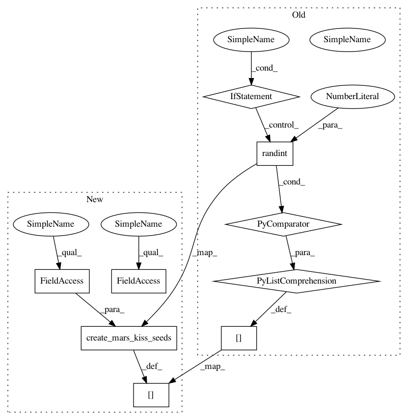

be5d818aa88bcab24624801149396995b610f19a,spynnaker/pyNN/models/neuron/synapse_dynamics/synapse_dynamics_structural_static.py,SynapseDynamicsStructuralStatic,get_seeds,#SynapseDynamicsStructuralStatic#Any#,262
Before Change
def get_seeds(self, app_vertex=None):
if app_vertex:
if app_vertex not in self.__seeds.keys():
self.__seeds[app_vertex] = \
[self.__rng.randint(0x7FFFFFFF) for _ in range(4)]
return self.__seeds[app_vertex]
else:
return [self.__rng.randint(0x7FFFFFFF) for _ in range(4)]
After Change
def get_seeds(self, app_vertex=None):
if app_vertex:
if app_vertex not in self.__seeds.keys():
self.__seeds[app_vertex] = (
create_mars_kiss_seeds(self.__rng, self.__seed))
return self.__seeds[app_vertex]
else:
return create_mars_kiss_seeds(self.__rng, self.__seed)
In pattern: SUPERPATTERN
Frequency: 3
Non-data size: 9
Instances
Project Name: SpiNNakerManchester/sPyNNaker
Commit Name: be5d818aa88bcab24624801149396995b610f19a
Time: 2020-09-10
Author: alan.barry.stokes@gmail.com
File Name: spynnaker/pyNN/models/neuron/synapse_dynamics/synapse_dynamics_structural_static.py
Class Name: SynapseDynamicsStructuralStatic
Method Name: get_seeds
Project Name: SpiNNakerManchester/sPyNNaker
Commit Name: be5d818aa88bcab24624801149396995b610f19a
Time: 2020-09-10
Author: alan.barry.stokes@gmail.com
File Name: spynnaker/pyNN/models/neuron/synapse_dynamics/synapse_dynamics_structural_stdp.py
Class Name: SynapseDynamicsStructuralSTDP
Method Name: get_seeds
Project Name: SpiNNakerManchester/sPyNNaker
Commit Name: 4eb579b4cea4113759ef90d94f8e1e4aa379062f
Time: 2020-09-08
Author: alan.barry.stokes@gmail.com
File Name: spynnaker/pyNN/models/neuron/synapse_dynamics/synapse_dynamics_structural_common.py
Class Name: SynapseDynamicsStructuralCommon
Method Name: __write_common_rewiring_data
Project Name: SpiNNakerManchester/sPyNNaker
Commit Name: be5d818aa88bcab24624801149396995b610f19a
Time: 2020-09-10
Author: alan.barry.stokes@gmail.com
File Name: spynnaker/pyNN/models/neuron/synapse_dynamics/synapse_dynamics_structural_static.py
Class Name: SynapseDynamicsStructuralStatic
Method Name: get_seeds